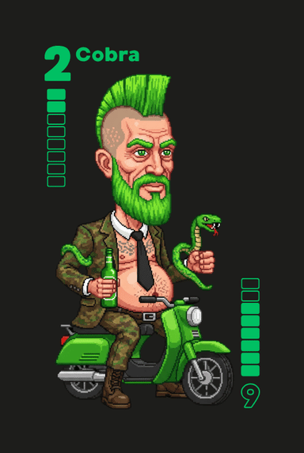

Die Legenden vom Hinterhof
Ein Kartenspiel für 2 bis 4 Spieler · Spielidee: Sebastian Boos & Roland Heck
Spielregeln ›
Worum geht's hier überhaupt?
Du kennst noch das Kartenspiel Arschloch? Vergiss es. Das war auf dem Schulhof.
Wir sind hier im Hinterhof. Bei Bronko-Donko werden nicht einfach nur Karten getauscht –
hier werden Fressen poliert. Schick deine Schlägertrupps los und sorge dafür, dass du nicht
der Letzte bist, der noch Karten auf der Hand hält. Denn dies ist das knallharte Kartenspiel
für 2 bis 4 Spieler, bei dem der Verlierer mehr als nur seine besten Karten abgibt.
Diese Gängs versammeln sich am Hof
Acht Truppen, acht Geschichten, ein Ziel: den Bronko-Orden holen.
Die Donkos
Genetische Ausfälle, deren Deprivation in gewalttätiges, schmerzresistentes Verhalten kippt.
Ein Donko wird man nicht, man ist es – ein reinrassiger Gendefekt, gezüchtet aus Generationen puren Versagens. Doch wehe, die Revolution bricht aus: Der plötzliche Entzug täglicher Demütigung verursacht einen Kurzschluss in ihrem Inzucht-geplagten Erbgut und entfesselt einen schmerzresistenten, geifernden Wahnsinn, der alles und jeden daggert.
Die Cobras
Bodensatz der Gesellschaft auf zwei Rädern. Motorrad-Gang, angetrieben von Selbsthass.
Die Cobras sind der Bodensatz der Gesellschaft auf zwei Rädern – eine fahrende Selbsthilfegruppe für Perverse, Säufer und gescheiterte Existenzen, deren Traum von der Harley an einem knatternden Mofa verreckt ist. Sie prügeln sich nicht aus Ehre, sondern aus purem, unverfälschtem Selbsthass. Jeder Schlag ins Gesicht ist für sie eine willkommene Buße für ihr verkorkstes Leben, jeder Tritt eine Bestätigung, dass sie es verdient haben.
Die Hipster
Wohlhabende Urbaniten auf der Jagd nach „authentischer, post-industrieller Gewalterfahrung".
Frisch aus ihren überteuerten Lofts gekrochen, betreten sie perfekt gestylt den Hof mit dem Ziel, eine authentische, post-industrielle Gewalterfahrung zu erleben. Ein gezielter Schlag ins Gesicht beendet ihren Ausflug in die Realität meist abrupt und schickt sie weinend zurück zu ihrem Soja-Latte und ihrem nachhaltigen Lifestyle-Blog.
Die Vertriebler
Verkäufer, die Gewalt als Networking-Tool sehen und mitten im Kampf das Verkaufsgespräch halten.
Mit einem Lächeln, das so falsch ist wie ihre angebliche Rendite, stolpern die Vertriebler in den Kampf. Sie halten den Hinterhof für ein exklusives Networking-Event und versuchen dir, während du ihnen die Nase brichst, noch ihre synergetische Big-Data-Cloud-Plattform mit KI-Power aufzuschwatzen. Ihre einzige Stärke ist ihre Unfähigkeit aufzugeben, denn jeder Niederschlag könnte ja eine neue Kundenbeziehung einleiten.
Die Hautzen
Alkoholgespülte Sportclub-Mitglieder mit Schmerztoleranz jenseits jeder Vernunft.
Für den Verein, für den Suff, für die Schlägerei! Die Hautzen sind eine grölende Masse aus Vereinstreue, Promille und Pyrotechnik, deren Blutkreislauf zu 80 % aus billigem Dosenbier besteht. Sie sind keine talentierten Kämpfer, aber ihre vom Alkohol betäubten Körper können eine unmenschliche Menge an Schlägen einstecken, bevor sie überhaupt merken, dass sie bluten. Ihre Taktik: Torkeln, Pöbeln, Umfallen.
Die Bunniez
Weibliche Spezialeinheit auf Rachefeldzug gegen das Patriarchat. Keine Gefangenen.
Die Bunniez sind keine Gäng, sie sind die Kammerjägerinnen der Schöpfung – eine Spezialeinheit, ausgesandt, um den männlichen Unrat aus dem Genpool zu spülen und der Sausage Party bei Bronko-Donko den Stecker zu ziehen. Ihr heiliger Rachefeldzug gegen das Patriarchat endet erst, wenn sie jedem verdammten Kerl am Hof nicht nur die Eier abgerissen, sondern seine jämmerliche Seele anschließend als Aschenbecher für ihre Siegeszigarette missbraucht haben.
Die Moneyboyz
Dubai-affine Hustler, die ihre innere Leere in Gang-Gewalt kanalisieren.
Aus ihrem in Dubai geleasten Mufti-Lambo verkaufen die Moneyboyz Losern wie dir das Mindset zum großen Cash. Doch hinter dem gebleachten Grinsen lauert eine von Koks und Selbsthass zerfressene Leere. Am Hof wird ihre innere Fäulnis zur blutigen Gangsta-Performance und jeder kassierte Schlag zu neuem, authentischem Insta-Content. Erwarte keinen fairen Kampf, sondern einen verzweifelten Bastard, der dir mit gebrochenem Kiefer noch die letzten Fifty Cent zockt, um sein Business zu skalieren.
Die Bronkos
Die alten Motorrad-Götter. Wer ihnen begegnet, hat den Hof schon verloren.
Die Bronkos sind keine Gang, sie sind die verdammte Endabrechnung auf zwei Rädern – der letzte rostfreie Nagel im Sarg der Menschlichkeit. Jeder ihrer Schläge ist ein verdammter Schöpfungsakt, der aus deinem Gesicht eine völlig neue Form des Todes erschafft. Sie sind die alten Götter des Hofs, die dem Teufel persönlich die Innereien durch seinen Hals hochgezogen haben, weil er behauptet hat, das Böse erfunden zu haben. Ein Tritt von ihnen beendet keine Diskussion, er beendet deine scheiß Existenz.
Berüchtigte Schläger am Hof
Erste Einzelgänger wurden in der Nähe des Hofes gesichtet.
Burning Günther
Aus Wut geschmiedet, vor nichts in Acht — außer vor Mutters Anrufen wegen Pfandflaschen.
Manche Leute behaupten, Burning Günther wurde nicht geboren, sondern in einem Vulkan aus Kerosin und Zorn geschmiedet. Er putzt sich die Zähne mit Schießpulver, gurgelt mit Benzin und seine liebste Einschlafgeschichte ist das Geräusch eines lichterloh brennenden Gebäudes. Man sagt, der Teufel selbst habe einmal Günthers Seele kaufen wollen, doch dieser riss ihm daraufhin kurzerhand die Innereien durch den Hals, einfach weil er es kann. Fünf Minuten später gehörte ihm die legendäre Harley des Teufels – Hells Bells! Es gibt absolut nichts auf dieser Welt, wovor sich dieser Mann fürchtet – außer seiner Mamm, die jeden Morgen anruft, sobald sie wieder halbwegs ausgenüchtert ist, und wissen will, ob Günther endlich ihr Karlskrone Dosenpfand bei Aldi zurückgegeben hat.

Der Bänker
Ehemaliger Anarchist, kaputtgegangen am Banking. Kanalisiert seinen Groll auf der Straße.
Peter Grundigs Rebellion aka „Der Bänker" endete nicht mit einem Knall, sondern mit einem Arbeitsvertrag. Jahrelang war der Rauterstrauchpark sein Reich, Dosenbier sein Nektar und die Tür der Volksbank sein Pissoir. Doch als der Filialleiter ihm in einem Anfall von Personalnot eine Krawatte um den Hals warf, kapitulierte der Möchtegern-Anarchist unter dem Vorwand, das System von innen zu stürzen. Heute, 25 Jahre und unzählige verkaufte Bausparverträge später, kanalisiert er den puren Hass auf sein eigenes verlogenes Leben in die brutalen Schlägereien der Burbacher Cobras.
Dr. nar. Kose
Narkotika-Spezialist. Nutzt Drogen als Waffe und als Buße für eigene Verderbtheit.
Tagsüber spritzt der narzisstisch veranlagte Dr. nar. Kose im Keller des Krankenhauses der Warmherzigen Brüder nicht nur Narkosemittel, sondern lebt auch seine perversen Mutterkomplexe an wehrlosen PatientInnen aus. Als Ausgleich für seine Schandtaten und weil ihn im echten Leben jeder verachtet, kommt dieser Versager in den Hof, um sich auf einer vollen Dosis Ketamin von anderen zu Brei schlagen zu lassen – seine ganz persönliche Buße. Doch wehe, die Revolution bricht aus und stellt die Regeln auf den Kopf: Dann erwacht das Monster in ihm, er betäubt seine Opfer übelst mit seinen krassesten Drogen und zückt das Skalpell, um den dann wehrlosen Körpern seiner Gegner im Hof endlich die Aufmerksamkeit zu schenken, nach der er sich so sehnt.
Der Dünenwolf
Identitäts-Wandler. Sucht Wahrheit durch Gewalt und psychologische Auflösung.
Seine inneren Dämonen trieben den Dünenwolf auf eine wahnsinnige Suche nach der ultimativen Wahrheit. Diese endete nach 63 Dosen Bier und wochenlanger Dehydration in der südfranzösischen Dünenlandschaft. Dort löste sich sein Verstand nicht auf – er kristallisierte sich zu einer einzigen, furchtbaren Singularität: Jede Identität ist die meine, und jedes Wesen abseits des blutigen Pfades der Wahrheit nur eine Hülle, die darauf wartet, aufgeschlitzt und getragen zu werden. Doch hinter dieser gottgleichen Fähigkeit lauert die jämmerliche Realität: Der Dünenwolf selbst existiert nicht mehr. Unter all den Masken ist nichts als ein zitternder Niemand, ein kampfunfähiges Echo in der Wüste, das erst in fremder Haut zum Monster wird. Sein ganzer Hass gilt Dr. nar. Kose, dem ultimativen Feind seiner Wahrheit, der als letzte Blasphemie auf seinem Pfad unbedingt zerstört werden muss.
Noch ein Vorgeschmack
Zweiter Trailer, frisch vom Hof — kurz, laut und schmutzig.
Bereit für den Hof?
Die ganzen Hofregeln — Spielvorbereitung, Ablauf, Abrechnung, fiese Tricks.
Alles, was du brauchst, um den Hof zu regieren.
Hofregeln lesen ›